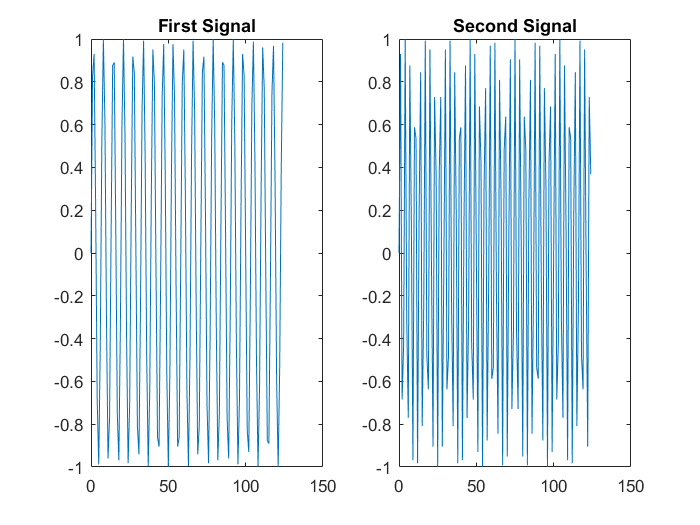

Contents
Codes for AUT-Multimedia 2016 Course
Lecture 1: Aliasing in Audio Signals
Taught by: Nima Mahmoudi
This code is released under the GPLv3 license for non-commercial use only. For other types of license please contact me.
Acknowlegment: Codes in this lecture are written by Dr. Seyeding, so they are not my work.
Setting Parameters
Here we set the parameters used in the tutorial
% Clearing the workspace: it is always a good practice, so we don't get % mixups. clear all, clc, close all, fclose all; % Sampling Frequency fs=40000; % Duration of signal (we set this low for presentation purposes) duration = 1/16; % 1/6 Sec % Time variable t=0:1:1/16*fs; % Sinusoidals Frequencies f1=6200; f2=12400;
Forming Sinusoidals
y0 = sin((2*pi*f1/fs)*t); figure(1); subplot(1,2,1); plot(t(1:round(end/20)),y0(1:round(end/20))); title('First Signal'); y1 = sin((2*pi*f2/fs)*t); subplot(1,2,2); plot(t(1:round(end/20)),y1(1:round(end/20))); title('Second Signal');
Adding Signals, and Plotting Spectograms
y = y0 + y1; figure(2); subplot(3,1,1); spectrogram(y,[],[],[],40E3,'yaxis'); title('40 KHz Sampling'); y2 = downsample(y,4); %fs=10000Hz subplot(3,1,2); spectrogram(y2,[],[],[],10E3,'yaxis'); title('10 KHz Sampling'); y3=downsample(y,8); %fs=5000Hz subplot(3,1,3); spectrogram(y3,[],[],[],5E3,'yaxis'); title('5 KHz Sampling');

Writing files to the disk
audiowrite('2sinus.wav', y,40000); audiowrite('2sinus_alias10000.wav',y2,10000); audiowrite('2sinus_alias5000.wav',y3,5000);
Warning: Data clipped when writing file. Warning: Data clipped when writing file. Warning: Data clipped when writing file.
Playing Files
player = audioplayer(y,40000); play(player); pause; player = audioplayer(y2,10000); play(player); pause; player = audioplayer(y3,5000); play(player);